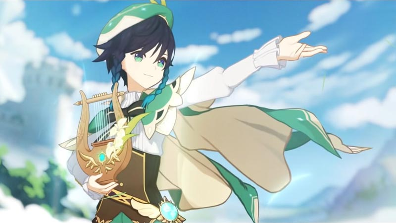

Venti has a somewhat recalcitrant, carefree, and playful attitude as well as a liking to rhyming in his speech. He sees a particular worth in music to the point where he names his lyre, saying, "every being deserves a name to be called upon, and woven into a song." He is also bold, not fearing to insult or ignore those who are supposedly powerful. In the game, he responds to Paimon's comments and nicknaming by parroting her.Venti enjoys roaming around Mondstadt playing songs to his people, most of whom are unaware of his true identity as Barbatos. He is very well-liked due to his musical talent, having won the title "Most Popular Bard of Mondstadt" three times.[2] He is also an avid drinker of alcoholic beverages, such as Dandelion Wine and has an unusually high tolerance to alcohol. He is also fine with apple cider. To his disdain, the form he takes causes most bartenders to see him as a minor.Being a god who is generally absent for prolonged periods of time, Venti has no personal finances; he often resorts to pilfering from the Dawn Winery for food and shamelessly has people listening to his songs buy him drinks in lieu of a payment. For reasons unknown, he is deathly allergic to cats and will not perform unless he is certain none are nearby.He also enjoys apples, considering them to be the fruit of the gods, jokingly stating that he would refuse to go to Celestia even if he was invited because their apples are bland and the water foul, which would make bad cider. He dislikes items that are sticky and slimy, such as cheese.Despite his normally playful personality as the bard Venti, he speaks wisely and somewhat philosophically whenever he assumes his true identity due to the many experiences he had being one of the original members of The Seven. Compared to Zhongli, the mortal vessel of Morax, Venti does not mind revealing his identity and using his powers for various tasks.For all his cheer and wisdom, Venti hides a lonely soul who, even millennia later, continues to feel strongly about the loss of the Bard whose form he imitates and even compares himself to "Stanley" for he too assumed the appearance of his deceased friend, and tells the Traveler that it is in the most innoccous moments are those in which he suddenly is hit by his grief.Venti also confesses to finding the Traveler's ability to discern what he's thinking as discomforting, but admits that he appreciates having a true friend, similar to how he views the Bard.
